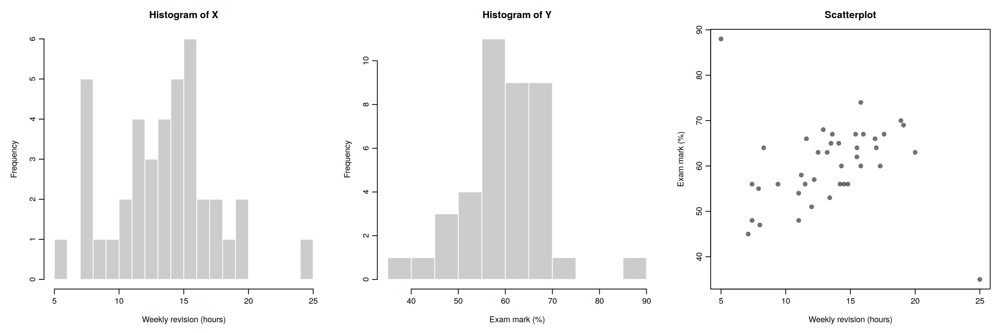
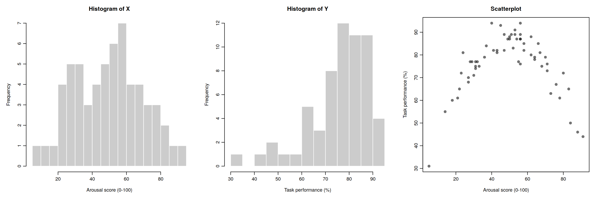
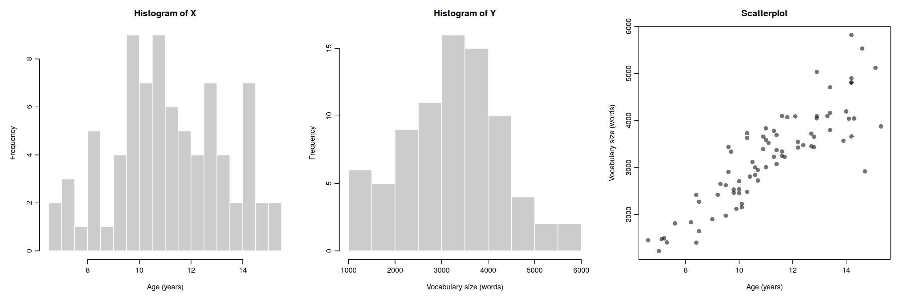

5. Week 5 - More on correlation - Assumptions, issues, an alternative and intercorrelation
Written by Margriet Groen
This week we focus on two strands of learning:
- More on correlation analysis
- Research project: Refine research question, decide on measures, pre-register hypothesis
Building on last week’s work on how hypothesis testing and significance testing, this week we will continue to look at correlation as a measure of association between two numerical variables. We will review assumptions associated with Pearson’s r, discuss some issues important to be aware of when interpreting correlation results and finally, we’ll talk about intercorrelation.
We will also start the group project in which you will investigate the question: Is mind wandering related to screen time?
The materials we have prepared to support your learning are arranged in four parts:
- Lectures
- Reading
- Pre-lab activities
- Lab activities
You can navigate to each in the side bar on the right
Lectures
Please watch the lecture material, complete the essential reading and then the pre-lab activities before attending your lab. As a reminder, the lectures and pre-labs introduce the concepts and give you some initial practice, and the lab gives you the opportunity to apply these skills in-person with our support.
Make a note of questions as you work through the material. These might be answered later in the recordings, or in your lab. Otherwise, please bring them to the live online Q&A session on Friday or post them on the Q&A forum on Moodle.
Section A: More on correlation
You can watch the lecture for the video using the video playback windows shown next. The lecture is split into different sections. You can download the slides for all sections together here: More on correlation: slides.
- Theory – Assumptions(~35 minutes) Watch this part before you complete the reading and the pre-lab activities. The video has captions, in case you find that helpful. You can download the slides and a transcript from the links below the video.
- Theory – What happens if assumptions are violated(~20 minutes) You can download the slides and a transcript from the links below the video.
What happens when assumptions are violated: transcript.
- Theory – Issues(~35 minutes) You can download the slides and a transcript from the links below the video.
Before continuing, we recommend you take a 15-minute break away from your computer. Remember to note down any questions to bring to the Q&A, lab or discussion forum whilst you’re watching the lectures.
Reading
All reading is accessible via the library. You can go to Moodle -> Library Resources -> Resource List or you can follow this link. Readings have one of the following tags:
- Essential: We expect you to be familiar with these reading. You will be assessed on this.
- Recommended: We highly recommend these readings. They often provide a different perspective, or explain things in a different way.
- Optional: Further readings for those interested.
The reading list is divided into multiple sections:
- Reading associated with statistics: this contains links to readings useful for the development of statistical concepts and skills. The main textbook Fundamental statistics for the behavioral sciences by Howell (Essential) lives here.
- Reading associated with psychological research principles and design: this contains links to readings that provide a good basis for foundational knowledge around research design.
- Reading associated with Open Science principles and practices: this contains links to key literature on the Open Science movement.
- Week by week: these contain links to key reading for that week that are not listed on any of the more general lists above.
For week 5, the reading is:
- Howell, D. C. (2017). Fundamental statistics for the behavioral sciences (9th ed.). Cengage Learning. Chapter 9. Essential
- Focus on sections 9.5, 9.6, 9.7 and 9.12. These sections support the concepts introduced in the pre-recorded lecture on applying the hypothesis testing framework to correlation and reporting the results correctly.
Pre-lab activities
Pre-lab activity 1: Getting ready
To complete this week’s lab activities you will need several files:
- We’ll work with an example script called
4141_wk5_lab.qmd. This is a Quarto document. - We need several data files.
You can download the files here: 4141_wk5_lab.zip. Usually they will be saved in your ‘Downloads’ folder.
Next, upload the zip-folder as it is to your Files space on the R-server (bottom right quadrant; no need to extract the files first).
Finally, open the example script by clicking on the file called 4141_wk5_lab.qmd in the Files space on the R-server.
You are now ready to start work on the lab activities.
If you haven’t done so already, this is a good time to watch the ‘How to’ videos on how to:
- Use RStudio - in this section
- Build a plot - in this section
- Use
here()- in this section - Use
mutate()- in this section - Conduct and interpret correlation analysis - in this section
Lab activities
Lab activity 1: Assumptions of Correlation Analysis
Question 1: Types of variables
Correlation would be an appropriate form of analysis for researchers interested in the relationship between:
- Dog (breed) and height (cm) of owner
- Speed of swimming (mph) and area of tank (cm)
- Number of cows sitting and rain fall (mm)
- Total llama saliva (ml) expelled and gender of visitors
- b and d
- b and c
For Pearson’s r, we hope the data look like a smooth, oval cloud: a straight-line relationship, equal spread of Y at every value of X, and a bell shape. We also watch for outliers: participants who don’t fit the overall pattern.
For each question below, look at the three plots (a histogram of X, a histogram of Y, and a scatterplot) and answer the questions. All the data are simulated for teaching.
Question 2: Revision and exam marks
Forty students reported how many hours per week they spent revising and then sat an exam.

- Look at the two histograms only. Does any student look unusual? Note anything you see.
- Now look at the scatterplot. Which students do not fit the overall pattern? Describe each one, giving their approximate revision hours and exam mark.
- Why can the scatterplot reveal something the histograms cannot?
- Before running any analysis, what should you check about these students? Give two possible explanations for their scores.
- If you calculated Pearson’s r for all 40 students, and then again without these students, would r get higher, lower or stay the same? Explain your reasoning.
Question 3: Arousal and task performance
Sixty participants completed a memory task. Before the task, each was given a score for how aroused (alert and activated) they felt.

- Describe the relationship between arousal and performance in words.
- Look at the histograms. Do they suggest any problem with using Pearson’s r?
- Without calculating anything, would you expect Pearson’s r to be strong and positive, strong and negative, or close to zero? Explain why.
- Which assumption is violated here? Would switching to Spearman’s rho solve the problem? Why or why not?
- What does this example tell you about reporting a correlation coefficient without looking at the scatterplot?
Question 4: Age and vocabulary
Eighty children aged between 6 and 16 took a vocabulary test.

- Compare the spread of vocabulary scores for children aged about 7 to 8 with those aged about 13 to 15. Give approximate ranges for each group.
- Which assumption is violated? Name it and describe what is wrong in your own words.
- Could you have spotted this problem from the two histograms alone? Explain.
- Why might this problem affect the p-value for Pearson’s r?
- The spread of vocabulary scores grows roughly in proportion to the average score. Suggest one thing you could try.
Lab activity 2: Finish lab activities from previous weeks (Recap - skip if completed successfully last week)
Background
Over the past few weeks, we worked with some publicly available data from a research project on mind wandering. You can have a look at the questionnaire here.
If you did not successfully finish the lab activities for weeks 1, 2, 3, or 4 you may want to complete these first.
You can log into the R server, open your project (the .Rproj file) and open the Quarto file (ending with .qmd) to continue to work through these.
Aims of the activity
Ensure you are familiar with reading in a .csv-file, creating a histogram and calculating summary statistics.
Steps
- Login to the R-server
- Click on the R-project (the
Rproj) file to open it - In the Files tab (right bottom quadrant), navigate to the example script for that week’s lab activities. This is the Quarto file (ending with
.qmd). Click on it to open it. - Complete any remaining activities
Lab activity 3: Checking for missing data
Aims of the activity
We are going to:
- Setup the appropriate bits and pieces in RStudio
- Read in the data files
- Check for missing data
- Calculate and interpret Pearson’s r using
correlation()
Step 1: Setup the appropriate bits and pieces in RStudio
Before we can do anything, we need tell R what packages we want to use. We use the function library() to do that. It is useful to have a section at the top of your script where you load all the relevant libraries.
Action: Insert a new code chunk by clicking on ‘Code’ at the top and selecting ‘Insert Chunk’.In the code chunk, write code to load the libraries by using the
library()function. We need the packageshere,tidyverseandeasystats. After you’ve written the code, make sure the run the code chunk (click on the green arrow in the top corner of the code chunk).
We need to load several packages (here, tidyverse and easystats) using the library() function. First, inside the code chunk, write library() and put here inside the brackets. On the next line in the code chunk, write library() and put tidyverse inside the brackets. On a third line in the code chunk, write library() and put easystats inside the brackets. Make sure to run the code chunk by clicking on the green arrow in the top corner of the code chunk.
Step 2: Read in the data
For this lab activity, you’ll need the file named vocabulary_experience.csv.
Action: Insert a new code chunk by clicking on ‘Code’ at the top and selecting ‘Insert Chunk’. Inside the chunk, use
read_csv()to read in the data file namedvocabulary_experience.csv; tell R where to find the file and what it is called. Make sure you’ve run the code chunk. Then, check that you can see the ‘object’ (also called ‘data-frame’) in the Environment (top right quadrant) for the file you read in. I’ve called the data-framedata_thirty. If you can’t remember how to do this, look at the Hint below. Give it a go. If you are still stuck, look at the Code below. You may have to adapt the filepath to match your setup.
dataframe <- read_csv(here("filepath to folder", "filename.extension))
Your code should include:
- dataframe: the name of the object you want to save the data in (such as
data_mw_subscales) - <- : assignment arrow
- read_csv() : the
read_csv()function - here(): the
here()function - “filepath to folder”: the folders that you need to point R to starting from whereever here starts
- “filename.extension”: the name of the datafile, including the extension
data_thirty <- read_csv(here("4141_wk5_lab", "vocabulary_experience.csv"))Questions Step 2 a. How many participants does the data frame contain? b. How many degrees of freedom would you expect to see in the output if you were to run a correlation analysis with the variables vocabulary and experience using this data frame?
Step 3: Check for missing data
We can check whether there are any missing data in a data-frame in multiple ways:
- We can click on the data frame in the Environment (upper right quadrant). The data frame will then open in the Source quadrant (upper left quadrant). Any ‘empty’ cells will have an
NA(which stands for ‘Not available’) in them. - We can use the
glimpsefunction. This gives a compact overview of the data frame, showing the number of rows and columns, then each variable’s name, its type (such as<dbl>for numbers or<chr>for text) and its first few values, so you can quickly check that the data have been read in correctly. Missing data are shown asNA. - We can use some code to check how many missing data points a data frame contains. For this we use the
is.na() function inside thesum() function. - We can use some code to check how many participants have complete data. For this we use the
complete.cases() function inside thesum() function.
Actions: 1. Click on the data frame in the Environment and have a look at it in the Source quadrant. 2. Use the
glimpse() function to have a look at the data frame. 3. Use theis.na() function in combination with thesum() function to check how many NAs there are. 4. Use thecomplete.cases() function in combination with thesum() function to check how many participants have complete data. You can use the code below to do this. Have a look at each line of code and make sure you understand what the different bits are doing.
# Have a look at the data frame
glimpse(data_thirty)
# Check the number of NAs in the data frame
check_n_NA <- sum(is.na(data_thirty))
check_n_NA
# Check the number of participants with complete data
check_n_complete <- sum(complete.cases(data_thirty))
check_n_completeAction: Run a correlation analysis with these data. If you can’t remember how to do this, look at the Hint below. Give it a go. If you are still stuck, look at the Code below.
Questions Step 3 a. How many data points are missing? b. How many participants have complete data? c. How many degrees of freedom are reported in the output from the correlation analysis. Explain how that number is derived. Does it match what you expected to see based on the number of participants?
Lab activity 4: Outliers
Aims of the activity
We are going to:
- Read in the data file
- Build scatterplots with
geom_point(), and add a line of best fit usinggeom_smooth() - Remove outliers using
filter(), and create another scatterplot - Calculate and interpret Pearson’s r using
correlation()for data with and without outlier values
Step 1: Read in the data file
For this lab activity, you’ll need the file named revision_exam.csv.
Action: Insert a new code chunk and use
read_csv()to read in the data file namedrevision_exam.csv; tell R where to find the file and what it is called. Make sure you’ve run the code chunk. Then, check that you can see the ‘object’ (also called ‘data-frame’) in the Environment (top right quadrant) for the file you read in.
Step 2: Build a scatterplot
Now we are ready to build a scatterplot to visualise the relationship between two of the variables. We are going to look at the relationship between revision time and exam marks.
Action: Insert a new code chunk and use
ggplot()to tell R what data to plot and which variables tot use. Then, add layers to plot the datapoints (usegeom_point()) and the line of best fit (usegeom_smooth(method="lm", se=TRUE)). If you need more guidance on how to do this, look at the Hint below. If you are still stuck, you can look at the Code below.
Step 3: Remove outliers using filter(), and create another scatterplot
Now,we’ll remove the two participants with outlier values. We’ll do this using the filter() function from the dplyr package (part of the tidyverse).
filter() work
The filter() function allows you to select specific rows from a data frame based on one or more conditions.
For example, imagine we have a dataset containing information about participants in a psychology study, including their age and gender. We might want to select only participants who are over 18 years old.
We can do this using:
filter(data, age > 18)Here: - data is the name of our data frame. - age > 18 is the condition we want to apply. - note these two bits of information are separated within the function by a comma. - only rows where the condition is TRUE are kept.
We can also apply multiple conditions. For example, to select participants who are over 18 and identify as a woman:
filter(data, age > 18, gender == "Woman")When we provide multiple conditions separated by commas, filter() keeps only rows that satisfy all of the conditions.
Some useful operators for filtering data include:
| Operator | Meaning | Example |
|---|---|---|
== |
Equal to | gender == "Woman" |
!= |
Not equal to | gender != "Woman" |
> |
Greater than | age > 18 |
< |
Less than | age < 30 |
>= |
Greater than or equal to | age >= 18 |
<= |
Less than or equal to | age <= 30 |
We can also use & (AND) and | (OR) to combine conditions.
For example:
filter(data, age >= 18 & age <= 30)This selects participants aged between 18 and 30 (inclusive).
Action: Use
filter()to remove the two participants with outlier values. We can do this by specifying that we only want to keep data from participants who revised for more than 5, but less than 25 hours. The code on the handbook page does this. You can copy the code into your script. Please have a close look and, using the information above, make sure you understand what each part of the code does.
data_revision_exam_clean <- filter(data_revision_exam, revision_hours >5 & revision_hours < 25 )Action: Now let make a scatterplot without the two participants with outlier values. As before, insert a new code chunk and use
ggplot()to tell R what data to plot and which variables tot use. Make sure to usedata_revison_exam_clean. Then, add layers to plot the datapoints (usegeom_point()) and the line of best fit (usegeom_smooth(method="lm", se=TRUE)).
Questions Step 3 a. Looking at the line of best fit in the first scatterplot (which included the participants with outlier values), how would you describe the relationship between revision hours and exam mark? b. What do you estimate the value of the correlation coefficient to be? c. Looking at the line of best fit in the second scatterplot (without the participants with outlier values), how would you describe the relationship between revision hours and exam mark now? d. What do you estimate the value of the correlation coefficient to be now?
Step 4: Calculate and interpret Pearson’s r using correlation() for data with and without outlier values
Action: Run two correlation analyses: one with the data with (
data_revision_exam) and one with the data without (data_revision_exam_clean) outlier values. If you can’t remember how to do this, look at the Hint below. Give it a go. If you are still stuck, look at the code you wrote for Lab activity 3, Step 3.
Lab activity 5: Spearman’s rho
Aims of the activity
We are going to:
- Read in the data file
- Build a scatterplot with
geom_point(), and add a line of best fit usinggeom_smooth() - Calculate and interpret Pearson’s r and Spearman’s rho using
correlation()
Step 1: Read in the data file
For this lab activity, you’ll need the file named reading_enjoyment_books.csv. It contains data from sixty adults who were asked how much they enjoy reading (variable name = reading_enjoyment), on a single item from 1 (not at all) to 5 (very much), and how many books they had read in the past 12 months (variable name = books_read).
Action: Insert a new code chunk and use
read_csv()to read in the data file namedreading_enjoyment_books.csv; tell R where to find the file and what it is called. Make sure you’ve run the code chunk. Then, check that you can see the ‘object’ (also called ‘data-frame’) in the Environment (top right quadrant) for the file you read in.
Step 2: Build a scatterplot using geom_jitter() instead of geom_point()
Now we are ready to build a scatterplot to visualise the relationship between reading enjoyment and number of books read.
Action: Insert a new code chunk and use
ggplot()to tell R what data to plot and which variables tot use. Then, add layers to plot the datapoints (usegeom_point()) and the line of best fit (usegeom_smooth(method="lm", se=TRUE)). If you need more guidance on how to do this, look at the Hint below. If you are still stuck, you can look at the code you wrote for Lab activity 4, Step 2.
Many of the participants gave the same rating and read the same number of books, so their points sit exactly on top of each other. geom_jitter() fixes this by moving each point a tiny random amount, so overlapping points spread out and you can see how many there are. You can tell R how to jitter the data points:
- width = 0.1 is the largest random nudge to the left or right. Ratings are whole numbers, so a point at 3 is moved to somewhere between 2.9 and 3.1. This is small enough that the five vertical stripes stay clearly separate.
- height = 0 means the points are not moved up or down. The number of books is a real count, so nudging points vertically would make the plot show values that aren’t in the data.
- alpha = 0.6 makes the points partly transparent (0 is invisible and 1 is solid). Where points overlap, the colour becomes darker, which gives a second clue about where the data are concentrated.
Jittering only changes how the plot looks. The data and the correlation are not affected.
Action: Instead of using
geom_point()in the scatterplot, trygeom_jitter(width = 0.1, height = 0, alpha = 0.6).
Step 3: Calculate and interpret Pearson’s r and Spearman’s rho using correlation()
Action: Run two correlation analyses: one with Pearson’s r, the other one with Spearman’s rho. If you can’t remember how to do this, look at the Hint below. Give it a go. If you are still stuck, look at the code you wrote for Lab activity 3, Step 3. When calculating Spearman’s rho, specify “spearman” under method instead of “pearson”.
Questions Step 3 a. What is the value for Pearson’s r, is it significant? b. What is the value for Spearman’s rho, is it significant? c. What is the correct correlation coefficient to use. Explain why.
Answers
Answers to the questions in lab activities will be shared after the final lab session of the week has concluded (Thursday afternoon)